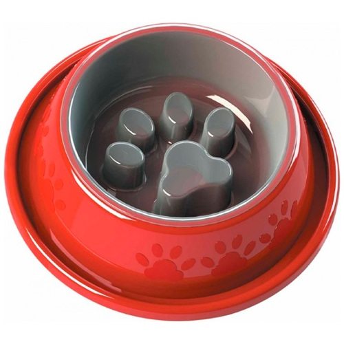

Comedouro para Cães e Gatos

Detalhes do Produto
- Produto: Comedouro para Cães e Gatos
- Marca: Ita Pets
- Material: Plástico resistente
- Indicação: Cães e gatos
- Tamanho: Médio
- Capacidade: 700 ml
- Uso: Alimentos secos ou úmidos
- Características: Leve, resistente e fácil de limpar
- Preço: R$ 22,90
Comedouro prático e resistente, ideal para a alimentação diária de cães e gatos.